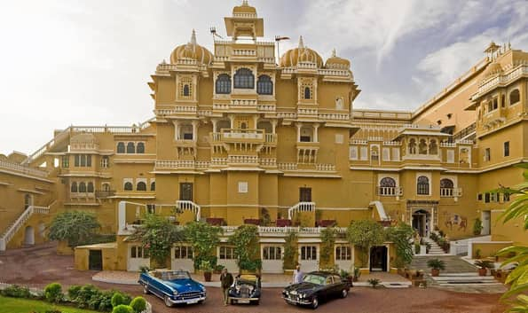
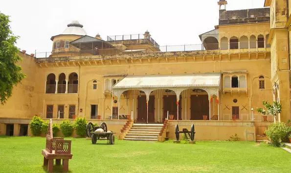
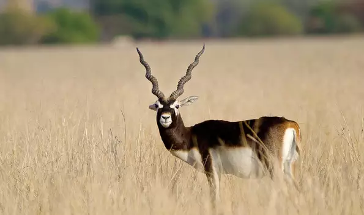

Mandawa Fort is considered to be one of the best Tourist Places In Rajasthan. Located in the interior of the Aravalli Hills in the state of Rajasthan, Mandawa fort is a gripping attraction for the visitors as it assists in portraying the retrospective history of the place along with endeavouring unique Rajasthani architecture.
Distance or location: Mandawa Fort is located at Mukundgarh Road, Mandawa, Rajasthan, India.
Best time to visit: The ideal time to visit Mandawa Fort is during the winter time. The temperature at this time is cool, pleasant, comfortable, and apt for the visitors to relish sightseeing. The ideal months to visit Mandawa Fort is in between October to March.
Charges: Entry charges incurred for per person is 50 INR or 0.770 USD.
02 Deogarh

Deogarh is considered to be a city and a municipality delineating worth watching sights solemnly for the visitors and tourists. Formerly Deogarh was the city and an estate of Chundawat Rights. In Deogarh, you can visit places like Chittorgarh Fort, Dashavatar Fort, Mana Stambha, and Chanderi.
Distance or location: Deogarh is a municipality and city and a municipality that is located in the Rajsamand District of Rajasthan.
Best time to visit: The ideal time to visit Deogarh is during winter in between the months October to February. The months in between October to February is the best and pleasant time to visit Deoghar. This time is considered to be the peak season inviting travellers to visit this place from afar.
03 Dundlod

Dundlod is a small town located in the district of Jhunjhunu in Rajasthan. Placed in Shekhawati. This is considered to be one of the Best Places to visit in Rajasthan. Famous for majestically colossal havelis and a captivating setup Dundlod is a place worth visiting which is at about seven kilometres north of the Nawalgarh region.
Distance or location: Dundlod is situated in Jhunjhunu district of Rajasthan. Placed in Shekhawati, Dundlod is at a distance of 34 kilometres from Jhunjhunu city.
Best time to visit: The ideal time to visit Dundlod is during winter time as the temperature at this time is below 5 Degree Celsius. It is not advisable to visit during summer because the temperature at Dundlod is at its extremes at that time.
04 Tal Chappar Sanctuary

Tal Chhapar Sanctuary is situated in the district called Churu of Northwest Rajasthan. Known for blackbucks, Tal Chappar Sanctuary acts as an abode to various types of birds. Located at a distance of 210 km from Jaipur, the sanctuary is located on the road from Ratangarh to Sujangarh. Tal Chappar Sanctuary so far is considered to be one of the best tourist Places to visit in Rajasthan.
Distance or location: Located in the Churu district, Tal Chappar Sanctuary is located in the Shekhawati region of Rajasthan.
Best time to visit: The ideal time to visit Tal Chappar Sanctuary is in the 2nd week of October until the last month of November.
Charges: There is a specific charge incurred before entering the Tal Chappar Sanctuary.